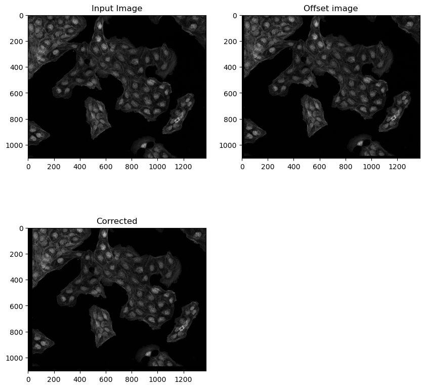

DIP-Introductory python tutorials for image processing(46-47)-Image Registration
DIP-Introductory python tutorials for image processing(46-47)-Image Registration
目录
- Tutorial 46 - Useful image registration libraries in python
- Tutorial 47 - Image registration using pystackreg library
Tutorial 46 - Useful image registration libraries in python
python中有用的图像配准库
搞得不是很懂..
Various types of image registration 各种类型的图像配准
Translation
- 平移
Rigid body (translation + rotation)
- 刚体(平移+旋转)
Scaled rotation (translation + rotation + scaling)
- 缩放旋转(平移+旋转+缩放)
Affine (translation + rotation + scaling + shearing)
- 仿射(平移+旋转+缩放+剪切)
Bilinear (non-linear transformation; does not preserve straight lines)
- 双线性(非线性变换; 不保留直线)
image_registration library - inspired by astronomers
pip install image_registration
2-D rigid translation
Chi2 shift: Find the offsets between image 1 and image 2 using the DFT upsampling method combined with $\chi^2$ to measure the errors on the fit.
- Chi2 转换: 使用DFT上采样方法结合$\chi^2$，找到图像1和图像2之间的偏移量，测量拟合误差。
Cross correlation shift: Use cross-correlation and a $2^{nd}$ order Taylor expansion to measure the offset between two images.
- 互相关转变: 使用相互关系和$2^{nd}$阶泰勒展开来测量两幅图像之间的偏移量。
Optical flow based image shift 基于光流的图像移位
part of scikit-image (and also opencv)
Optical flow is the vector field(u, v)
- 光流是向量场(u, v)
For every pixel in image 1 you get a vector showing where it moved to in image 2.
- 对于图像1中的每个像素，你会得到一个向量，显示它在图像2中的移动位置。
The vector field can then be used for registeration by image warping.
- 然后，可以使用矢量场通过图像扭曲进行配准。
Pystackreg library
pip install pystacking
Python/C++ port of the ImageJ extension TurboReg/StackReg written by Philippe Thevenaz/EPFL.
- ImageJ扩展TurboReg/StackReg的Python/ c++端口，由Philippe Thevenaz/EPFL编写。
Automatic alignment of a source image or a stack(movie) to a target image/reference frame.
- 自动对齐源图像或堆栈(电影)到目标图像/参考帧。
Performs translation, rigid body, scaled rotation, and affline.
- 执行平移、刚体、缩放旋转和仿射。
Also..
register each frame to the previous
- 将每一帧寄存到前一帧
register to first image
- 寄存到第一个图像
register to mean image
- 寄存均值图像
register to mean of first 10 images
- 寄存为前10个图像的平均值
calculate a moving average of 10 images, then register the moving average to the mean of the first 10 images and transform the original image(not the moving average)
- 计算10张图像的移动平均值，然后将移动平均值寄存到前10张图像的平均值，并转换原始图像(不是移动平均值)
|
- Method 1: chi squared shift
- Find the offsets between image 1 and image 2 using the DFT upsampling method 2D rigid
- 利用二维刚性DFT上采样方法找到图像1和图像2之间的偏移量
- Find the offsets between image 1 and image 2 using the DFT upsampling method 2D rigid
|
Offset image was translated by: 18, -17
Pixels shifted by: 18.001953125 -16.990234375
- Method 2: Cross correlation based shift 基于交叉相关的位移
- Use cross-correlation and a 2nd order taylor expansion to measure the shift
- 使用互相关和二阶泰勒展开来测量位移
- Use cross-correlation and a 2nd order taylor expansion to measure the shift
|
Offset image was translated by: 18, -17
Pixels shifted by: 18.00140750783571 -16.988641048024164

Tutorial 47 - Image registration using pystackreg library
Image registration using pystackreg
Python/C++ port of the ImageJ extension TurboReg/StackReg written by Philippe Thevenaz/EPFL.
- ImageJ扩展TurboReg/StackReg的Python/ c++端口，由Philippe Thevenaz/EPFL编写。
Automatic alignment of a source image or a stack(movie) to a tatget image/reference frame.
- 自动对齐源图像或堆栈(电影)到目标图像/参考帧。
Performs translation, rigid body, scaled rotation, and affine.
- 执行平移、刚体、缩放旋转和仿射。
Also..
- register each frame to the previous
- 将每一帧寄存到前一帧
- register to first image
- 寄存到第一个图像
- register to mean image
- 寄存均值图像
- register to mean of first 10 images
- 寄存为前10个图像的平均值
- calculate a moving average of 10 images, then register the moving average to the mean of the first 10 images and transform the original image(not the moving average)
- 计算10张图像的移动平均值，然后将移动平均值寄存到前10张图像的平均值，并转换原始图像(不是移动平均值)